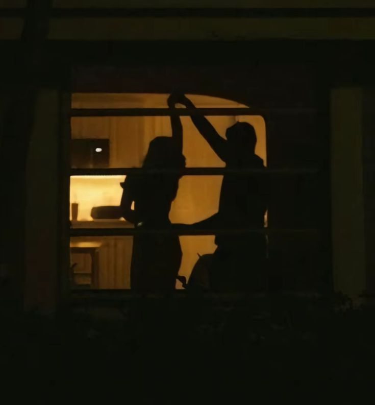

<!DOCTYPE html>
<html>
<head>
       <title>For Zayd</title>
</head>
<body style="background-color: burlywood;">
</html>
           <h1>Hello Zayd!</h1>
               <h2>What is going on?</h2>
                   
           <p>In the midst of waiting for you to text me back, I decided to learn your language!
               While this is very basic, and probably laughable to someone who fluently speaks computer, this is my attempt to get a peak into your world.
               <h2>Why am I doing this?</h2>
                   
           
            <p>I try my best to live my life honestly, even if that means sometimes my feelings aren’t reciprocated. I like knowing that I was genuine in expressing the truth of my nature. While the spirit of where my words come from means well, I understand that everyone lives their own colorful lives with elements that I will never know about. To get to the point, I can't stop thinking about you. I'd love to see you again but I also want to be respectful of your life and everything you have going on. With that being said, I think I need to let you go. I would also like to tell you that I am sorry if anything I did or said left a bad taste in your mouth, it was never my intention.</p>
               <p></p>I guess this also serves as a reminder to myself that I am just as cool as you. It is also is a nice way for me to conceptualize my melodramatic tendencies.</p>
               <h2>My Confession</h2>
                   
           <p>I remember when we were kissing in your car you asked me, "who do you work for?". I know you meant it in a light hearted way, it is the kind of question that gets stirred up when you start feeling like something is too good to be true. But to be honest, I am just me, I work for my brain. And my brain gets attached. Now I am not going to sit here and trauma dump on you. But I do feel the need to tell you that my attachments happen fast, that's why I don't really date or have sex on the first date. Anyway, I had a really good time with you. I hate that I like you so much, because in reality I barely know you. But what I do know, I like. I guess what happened is I saw the image of what could be, and I ran with it. I prematurely told my friends about this great guy I met, and how cool he is. I started day dreaming about you in my free time, texting you all the time (even though both of us claim to not like texting). What I am trying to say is that I am a hopeless romantic. I want someone to see me and be blinded by my light. Someone who wants to sift through all the filing cabinets in my brain and pick them apart. Someone who is eager to see me again. Someone who will chase me even though I am hard to chase because I kind of just melt at the thought of romance in my life. I am not saying that you are incapable or don’t want to do these things. I just think it's been made pretty clear that it is not a priority for you right now. And that’s okay, it really is. I just don’t think it is healthy for me to wait around for something that is likely to never happen.</p>
               <h2>So Now What?</h2>
           <p>Well now you go be Zayd and I will go be Diana. Just know I am rooting for you! I hope your ambition carries you to the end of all your goals and that your curiosity guides you to new adventures. May you always see the brightest stars in the sky! I hope you are well, and always remember that coincidences don’t exist!</p>
              <p>P.S.</p>
              <p>Just know that whoever gets to be your romantic interest in the future is very lucky! Good luck with everything!</p>
               <p>Love,</p>
               <p>Diana</p>
                   
</body>
